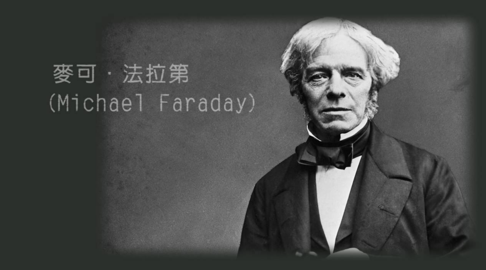
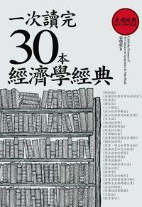

法拉第的蠟燭科學
法拉第最著名的通俗科學演講，就是以蠟燭為題材的一系列演講。在這演講裡他將各種與蠟燭燃燒的物理化學原理深入淺出地以實驗示範方法介紹給青年學生。因這一系列演講通常在聖誕節舉行，所以又稱為聖誕講座(Christmas Lectures)。第一次蠟燭系列演講開始於1827年，結束於1860年。演講內容紀錄於《蠟燭的化學史》(Chemical history of a candle)一書中。

科學
本書共分為六章，除談論到蠟燭製造、燃燒相關的氣體外，並有專章提到火光、氧氣及水、二氧化碳、燃燒產物的大氣汙染等，各種有關蠟燭燃燒的物理、化學原理。其中燃燒的物理、化學過程此一部分，雖然是151年前的科學，依然可以適用於現今的基礎科學教材中，更可從中窺知法拉第蠟燭系列演講的歷久彌新。
本書特色
- 這本書在英國已印了近兩百版，並被翻譯成數十種語言，在日本就印了近八十版！
- 本書所講的知識均為可檢驗而非空談，是精確而清楚的。

一次讀完30本經濟學經典
在這本書中，史密斯締造了古典政治經濟學的理論體系，概括了古典經濟學在它的形成階段的理論成就，最先有系統地闡述了政治經濟學的各個主要學說，對它的形成和發展產生了極其重要的作用。因此世人尊稱亞當‧史密斯為「現代經濟學之父」和「自由企業的守護神」。